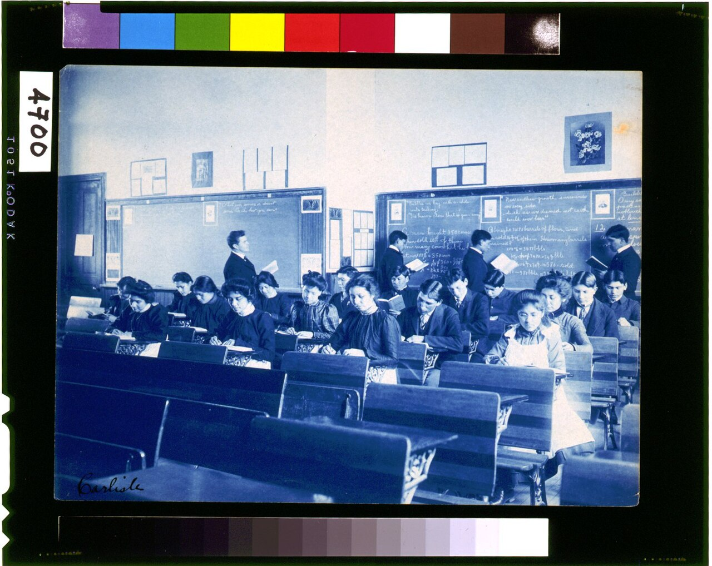
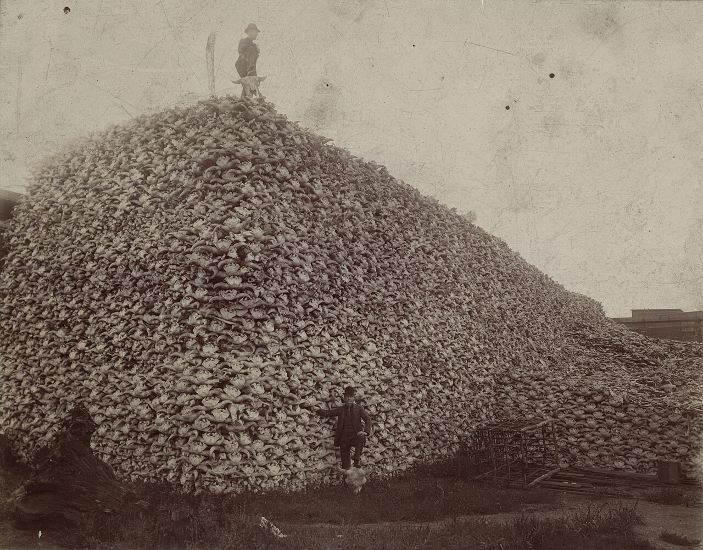
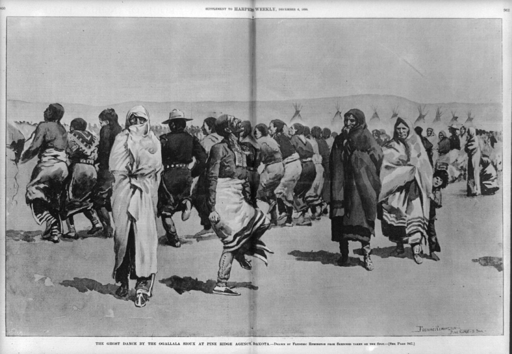

Directions: Work through all four stations. At each one, separate two things: what federal officials said the policy would do, and what the record shows it actually did. You will need both columns for the verdict at the end.
Source: Labeled summary of the Dawes Act and federal land records.
The Dawes Act divided reservation land held by a tribal nation into allotments, individual parcels assigned to Native families and adults. Land left over after allotment was declared surplus, and the federal government sold it to non-Native buyers. Supporters in Congress argued that private property would turn Native people into independent farmers and end tribal landholding, which they treated as the obstacle to progress. The land record tells the result. In 1887 Native nations held about 138 million acres. By 1934, when allotment ended, about 90 million of those acres had passed out of Native hands through surplus sales, sales by individual owners, fraud, and tax loss. Much of the land that remained was split into small parcels shared by many heirs.
What did supporters say allotment would accomplish, and which parts of that promise does the land record support or contradict?
Why would breaking tribal land into individual parcels weaken a Native nation even if no land had been sold at all?
Source: Photograph by Frances Benjamin Johnston, Carlisle Indian Industrial School, 1901, and a labeled summary of a student account published in 1900.

The Dakota writer Zitkala-Sa attended a boarding school in Indiana as a child and later described the experience for eastern magazine readers. In her account, summarized here, the hardest moment of her first days was the cutting of her hair, which in her culture was a mark of mourning and shame. She hid from the teachers, was found, and was held while her hair was cut. She also describes strict silence rules, marching in lines, and punishment for speaking her own language. The photograph above was taken at Carlisle, the model school for the system, by a photographer hired to document it.
What does the photograph show, and what was it made to prove? Name two specific details.
What does the student account record that no official photograph of the school could show?
Source: Photograph of a pile of American bison skulls, Michigan Carbon Works, Detroit, about 1892. Burton Historical Collection, Detroit Public Library.

Plains peoples used the buffalo for food, clothing, shelter, and tools. In the early 1870s, tens of millions of buffalo still lived on the Plains. Commercial hunters killed them for their hides, which railroads carried east, and the bones and skulls were later gathered and sold as well. Army officers welcomed the slaughter because it removed the food supply of peoples the army was fighting. By the mid 1880s, only a few hundred wild buffalo remained.
The skulls in this photograph were a product being sold, not waste. What does that tell you about the scale and purpose of the buffalo slaughter?
Connect this station to federal policy. How did destroying the buffalo make the reservation system easier to enforce?
Source: Illustration by Frederic Remington, published in Harper's Weekly, 1890. Library of Congress.

The Ghost Dance began with the Paiute prophet Wovoka, who taught that dancing and clean living would bring renewal: the dead would return, the buffalo would come back, and suffering would end. The teaching spread across western reservations in 1889 and 1890. At Pine Ridge in South Dakota, where the government had cut food rations, the federal agent feared the gathering and asked for troops. In December 1890, military police killed the Lakota leader Sitting Bull during an arrest attempt. On December 29, soldiers surrounded Big Foot's band of Lakota at Wounded Knee Creek to take their weapons. A shot was fired, and the soldiers opened fire. About 250 to 300 Lakota men, women, and children were killed.
What did the Ghost Dance promise, and why did that promise draw followers at Pine Ridge in 1890?
This image is an illustration drawn for a magazine, not a photograph. Why does that distinction matter when you use it as evidence about the Ghost Dance?
Federal officials described assimilation as protection and help. Rank the four stations from 1 to 4 by the size of the gap between what officials said and what the record shows. (1 = Largest Gap, 4 = Smallest Gap).
______ Station 1: The Dawes Act
______ Station 2: A Boarding School, Seen Two Ways
______ Station 3: The Buffalo, Counted in Skulls
______ Station 4: The Ghost Dance and Wounded Knee
Defend your number 1 ranking in a short paragraph. Use specific evidence from your top station, and compare it with evidence from at least one other station.
What did supporters say allotment would accomplish, and which parts of that promise does the land record support or contradict? Supporters said private property would make Native people independent farmers and end tribal landholding. The record contradicts the independence claim: about 90 million acres passed out of Native hands between 1887 and 1934, through surplus sales, individual sales, fraud, and tax loss. Tribal landholding was weakened, as promised, but that weakening is what produced the loss.
Why would breaking tribal land into individual parcels weaken a Native nation even if no land had been sold at all? Tribal land held in common was the base for tribal government and collective decisions. Divided among individuals and then among many heirs, the land could no longer be managed as one territory, and each small parcel was easier to tax, buy, or lose than the whole had been.
What does the photograph show, and what was it made to prove? Name two specific details. The photograph shows Native students in a Carlisle classroom, seated in order, in school uniforms, with books, under a teacher's supervision. It was made as publicity evidence that the school was turning Native children into orderly English speaking students. Accept any two accurate visible details: uniforms, rows of desks, books open, a white teacher presiding, a formal classroom setting.
What does the student account record that no official photograph of the school could show? What the system felt like from inside: the forced cutting of hair that carried shame in her culture, hiding and being held down, silence rules, marching, and punishment for speaking her language. A photograph can show a classroom. It cannot show fear, grief, or what a rule cost a child.
The skulls in this photograph were a product being sold, not waste. What does that tell you about the scale and purpose of the buffalo slaughter? A pile that size, gathered and shipped to an industrial city for grinding, shows the killing was commercial and continental in scale, not local hunting. Tens of millions of animals became hides, then bones and fertilizer. The purpose was profit from every part of the animal, and the effect, welcomed by army officers, was to remove the Plains food supply.
Connect this station to federal policy. How did destroying the buffalo make the reservation system easier to enforce? Peoples who could feed themselves could stay independent of federal rations. Once the buffalo were gone, Plains nations faced hunger unless they accepted reservation life and government food. Destruction of the food supply turned the reservation from an offer into a necessity.
What did the Ghost Dance promise, and why did that promise draw followers at Pine Ridge in 1890? Wovoka's teaching promised renewal: the dead would return, the buffalo would come back, and suffering would end, through dancing and clean living. At Pine Ridge, land had been taken, rations had been cut, and the buffalo were gone. A promise to restore exactly what had been lost answered exactly what people there had suffered.
This image is an illustration drawn for a magazine, not a photograph. Why does that distinction matter when you use it as evidence about the Ghost Dance? An illustration shows what the artist and the magazine wanted eastern readers to picture, filtered through one observer's choices. It is strong evidence of how the Ghost Dance was presented to the white public, and weaker evidence of what the dance itself looked like or meant to the dancers. Students should not cite it as a direct record of the event.
Rankings will vary. Full credit should be awarded if the student:
Teacher note. The hardest station to rank is Station 3, because the buffalo slaughter was commercial before it was federal. Strong students notice that the gap test works differently there: officials did not promise to protect the buffalo, and army officers said openly what the slaughter was for. That observation deserves full credit and a mention in discussion.